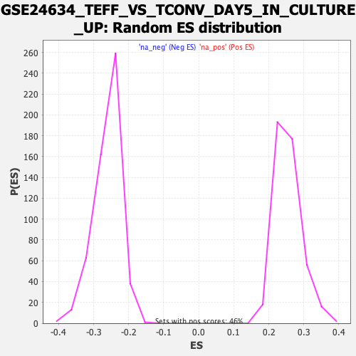

Profile of the Running ES Score & Positions of GeneSet Members on the Rank Ordered List
| Dataset | qlf.KOd4vsWTd4_gsea_score |
| Phenotype | NoPhenotypeAvailable |
| Upregulated in class | na_pos |
| GeneSet | GSE24634_TEFF_VS_TCONV_DAY5_IN_CULTURE_UP |
| Enrichment Score (ES) | 0.5647703 |
| Normalized Enrichment Score (NES) | 2.214288 |
| Nominal p-value | 0.0 |
| FDR q-value | 0.0 |
| FWER p-Value | 0.0 |
| SYMBOL | RANK IN GENE LIST | RANK METRIC SCORE | RUNNING ES | CORE ENRICHMENT | |
|---|---|---|---|---|---|
| 1 | GNL3 | 21 | 6.127 | 0.0245 | Yes |
| 2 | HSPE1 | 29 | 5.862 | 0.0492 | Yes |
| 3 | NDUFAF4 | 30 | 5.846 | 0.0745 | Yes |
| 4 | CACYBP | 41 | 5.609 | 0.0978 | Yes |
| 5 | NDUFAB1 | 109 | 4.535 | 0.1109 | Yes |
| 6 | SHMT1 | 115 | 4.489 | 0.1299 | Yes |
| 7 | PUS7 | 126 | 4.428 | 0.1481 | Yes |
| 8 | BRIX1 | 222 | 3.785 | 0.1553 | Yes |
| 9 | PFDN2 | 244 | 3.683 | 0.1692 | Yes |
| 10 | RANBP1 | 263 | 3.557 | 0.1828 | Yes |
| 11 | PSMG1 | 298 | 3.428 | 0.1944 | Yes |
| 12 | EIF3I | 348 | 3.247 | 0.2037 | Yes |
| 13 | EIF2S1 | 356 | 3.222 | 0.2170 | Yes |
| 14 | PER2 | 358 | 3.219 | 0.2308 | Yes |
| 15 | CXCR3 | 379 | 3.153 | 0.2425 | Yes |
| 16 | PRMT1 | 387 | 3.128 | 0.2554 | Yes |
| 17 | GEMIN6 | 390 | 3.106 | 0.2686 | Yes |
| 18 | PRMT3 | 426 | 3.008 | 0.2783 | Yes |
| 19 | POLR2F | 444 | 2.949 | 0.2894 | Yes |
| 20 | SHMT2 | 458 | 2.928 | 0.3008 | Yes |
| 21 | CDK2AP1 | 468 | 2.913 | 0.3125 | Yes |
| 22 | PDCD5 | 470 | 2.906 | 0.3250 | Yes |
| 23 | ELAC2 | 498 | 2.841 | 0.3347 | Yes |
| 24 | NUFIP1 | 502 | 2.830 | 0.3467 | Yes |
| 25 | NUDC | 564 | 2.702 | 0.3525 | Yes |
| 26 | OLA1 | 565 | 2.699 | 0.3641 | Yes |
| 27 | SAC3D1 | 596 | 2.625 | 0.3726 | Yes |
| 28 | NUP37 | 625 | 2.550 | 0.3809 | Yes |
| 29 | TIMM8B | 655 | 2.501 | 0.3890 | Yes |
| 30 | PSMD11 | 672 | 2.468 | 0.3981 | Yes |
| 31 | PSMD12 | 707 | 2.413 | 0.4052 | Yes |
| 32 | GMPS | 724 | 2.366 | 0.4139 | Yes |
| 33 | BHLHE40 | 751 | 2.328 | 0.4215 | Yes |
| 34 | MRPL40 | 768 | 2.296 | 0.4299 | Yes |
| 35 | NCF4 | 778 | 2.285 | 0.4389 | Yes |
| 36 | DTYMK | 782 | 2.280 | 0.4485 | Yes |
| 37 | STIP1 | 832 | 2.217 | 0.4533 | Yes |
| 38 | PPP1R14B | 844 | 2.203 | 0.4618 | Yes |
| 39 | TRAP1 | 897 | 2.130 | 0.4660 | Yes |
| 40 | GLMN | 921 | 2.104 | 0.4729 | Yes |
| 41 | RCC1 | 942 | 2.071 | 0.4799 | Yes |
| 42 | LRPPRC | 949 | 2.066 | 0.4883 | Yes |
| 43 | DUT | 1009 | 1.973 | 0.4911 | Yes |
| 44 | TSFM | 1046 | 1.917 | 0.4959 | Yes |
| 45 | STK39 | 1069 | 1.871 | 0.5019 | Yes |
| 46 | IPO5 | 1152 | 1.782 | 0.5016 | Yes |
| 47 | GRPEL1 | 1198 | 1.730 | 0.5048 | Yes |
| 48 | LRRC59 | 1206 | 1.722 | 0.5116 | Yes |
| 49 | ACAT1 | 1223 | 1.707 | 0.5174 | Yes |
| 50 | TIPIN | 1229 | 1.701 | 0.5243 | Yes |
| 51 | GSPT1 | 1246 | 1.682 | 0.5300 | Yes |
| 52 | PPA2 | 1288 | 1.640 | 0.5331 | Yes |
| 53 | COX17 | 1296 | 1.630 | 0.5395 | Yes |
| 54 | TIMM13 | 1318 | 1.610 | 0.5444 | Yes |
| 55 | MRPL16 | 1460 | 1.489 | 0.5372 | Yes |
| 56 | FAM98A | 1471 | 1.481 | 0.5427 | Yes |
| 57 | WDR12 | 1485 | 1.467 | 0.5478 | Yes |
| 58 | ATP8B4 | 1493 | 1.459 | 0.5534 | Yes |
| 59 | THOC1 | 1510 | 1.447 | 0.5581 | Yes |
| 60 | POLE3 | 1570 | 1.397 | 0.5585 | Yes |
| 61 | SLIRP | 1591 | 1.378 | 0.5625 | Yes |
| 62 | SNRNP40 | 1629 | 1.354 | 0.5648 | Yes |
| 63 | PABPN1 | 1730 | 1.279 | 0.5606 | No |
| 64 | GOT2 | 1815 | 1.211 | 0.5577 | No |
| 65 | RAD50 | 1837 | 1.195 | 0.5609 | No |
| 66 | TFDP1 | 1961 | 1.106 | 0.5538 | No |
| 67 | UAP1 | 2013 | 1.071 | 0.5534 | No |
| 68 | PELO | 2025 | 1.059 | 0.5570 | No |
| 69 | HCCS | 2027 | 1.057 | 0.5614 | No |
| 70 | OGFOD1 | 2063 | 1.033 | 0.5625 | No |
| 71 | SKP2 | 2168 | 0.974 | 0.5567 | No |
| 72 | DNAJA2 | 2181 | 0.969 | 0.5597 | No |
| 73 | SLC19A2 | 2248 | 0.925 | 0.5573 | No |
| 74 | MRPL23 | 2338 | 0.877 | 0.5525 | No |
| 75 | RBM28 | 2356 | 0.870 | 0.5546 | No |
| 76 | NMT1 | 2400 | 0.854 | 0.5542 | No |
| 77 | MED6 | 2427 | 0.840 | 0.5553 | No |
| 78 | TAF1A | 2454 | 0.829 | 0.5563 | No |
| 79 | RAD1 | 2478 | 0.813 | 0.5576 | No |
| 80 | TRAF3IP1 | 2501 | 0.800 | 0.5590 | No |
| 81 | RFC5 | 2539 | 0.784 | 0.5588 | No |
| 82 | SPDL1 | 2560 | 0.772 | 0.5602 | No |
| 83 | NUP155 | 2677 | 0.729 | 0.5521 | No |
| 84 | JMJD6 | 2723 | 0.707 | 0.5508 | No |
| 85 | DSCC1 | 2726 | 0.705 | 0.5537 | No |
| 86 | EXO1 | 2808 | 0.668 | 0.5487 | No |
| 87 | CHCHD3 | 2893 | 0.629 | 0.5433 | No |
| 88 | HMGB3 | 2924 | 0.620 | 0.5431 | No |
| 89 | KLHL7 | 2941 | 0.615 | 0.5442 | No |
| 90 | NABP2 | 2977 | 0.603 | 0.5434 | No |
| 91 | CDC7 | 2995 | 0.598 | 0.5444 | No |
| 92 | TEX10 | 3028 | 0.587 | 0.5438 | No |
| 93 | TYMS | 3053 | 0.578 | 0.5440 | No |
| 94 | THOC5 | 3122 | 0.555 | 0.5398 | No |
| 95 | DHFR | 3183 | 0.532 | 0.5363 | No |
| 96 | PLAA | 3191 | 0.528 | 0.5379 | No |
| 97 | HAUS7 | 3204 | 0.524 | 0.5390 | No |
| 98 | GMNN | 3303 | 0.491 | 0.5317 | No |
| 99 | UBR7 | 3334 | 0.480 | 0.5308 | No |
| 100 | SLBP | 3569 | 0.407 | 0.5099 | No |
| 101 | RAD54B | 3583 | 0.404 | 0.5104 | No |
| 102 | RANBP9 | 3745 | 0.358 | 0.4964 | No |
| 103 | MCM2 | 3767 | 0.353 | 0.4959 | No |
| 104 | FEN1 | 3804 | 0.341 | 0.4939 | No |
| 105 | SOCS2 | 3828 | 0.336 | 0.4931 | No |
| 106 | CDT1 | 4026 | 0.282 | 0.4753 | No |
| 107 | MPZL1 | 4050 | 0.276 | 0.4742 | No |
| 108 | RAP1GDS1 | 4216 | 0.237 | 0.4593 | No |
| 109 | RFC4 | 4233 | 0.231 | 0.4587 | No |
| 110 | AGPS | 4399 | 0.194 | 0.4436 | No |
| 111 | MCM7 | 4424 | 0.187 | 0.4421 | No |
| 112 | TUBA1C | 4483 | 0.173 | 0.4372 | No |
| 113 | RABIF | 4512 | 0.167 | 0.4352 | No |
| 114 | PMVK | 4574 | 0.148 | 0.4300 | No |
| 115 | ST7 | 4597 | 0.145 | 0.4285 | No |
| 116 | MYBL2 | 4824 | 0.102 | 0.4070 | No |
| 117 | KIF3A | 4830 | 0.101 | 0.4070 | No |
| 118 | ABHD5 | 4836 | 0.100 | 0.4069 | No |
| 119 | MAD2L1 | 4971 | 0.076 | 0.3943 | No |
| 120 | KDM1A | 5150 | 0.044 | 0.3772 | No |
| 121 | PAXIP1 | 5193 | 0.036 | 0.3733 | No |
| 122 | TTK | 5216 | 0.032 | 0.3713 | No |
| 123 | RRM2 | 5245 | 0.029 | 0.3687 | No |
| 124 | SLC39A14 | 5305 | 0.018 | 0.3631 | No |
| 125 | MELK | 5419 | -0.003 | 0.3522 | No |
| 126 | EZH2 | 5422 | -0.004 | 0.3520 | No |
| 127 | MCAT | 5432 | -0.006 | 0.3512 | No |
| 128 | DNM1L | 5439 | -0.006 | 0.3506 | No |
| 129 | CKAP2 | 5548 | -0.023 | 0.3402 | No |
| 130 | SMC2 | 5567 | -0.026 | 0.3386 | No |
| 131 | FAF1 | 5574 | -0.027 | 0.3382 | No |
| 132 | MRPL57 | 5604 | -0.033 | 0.3355 | No |
| 133 | RBFA | 5643 | -0.038 | 0.3320 | No |
| 134 | ZMPSTE24 | 5672 | -0.042 | 0.3294 | No |
| 135 | SMC4 | 5694 | -0.046 | 0.3276 | No |
| 136 | UBXN8 | 5699 | -0.047 | 0.3274 | No |
| 137 | PLK1 | 5706 | -0.047 | 0.3271 | No |
| 138 | GLO1 | 5736 | -0.054 | 0.3245 | No |
| 139 | TPM4 | 5788 | -0.063 | 0.3198 | No |
| 140 | GINS3 | 5911 | -0.082 | 0.3084 | No |
| 141 | RBBP8 | 5934 | -0.086 | 0.3066 | No |
| 142 | KIF2C | 5946 | -0.088 | 0.3059 | No |
| 143 | KIF15 | 6038 | -0.104 | 0.2975 | No |
| 144 | CENPN | 6045 | -0.105 | 0.2974 | No |
| 145 | TAF5 | 6151 | -0.124 | 0.2878 | No |
| 146 | HBS1L | 6157 | -0.125 | 0.2878 | No |
| 147 | ESPL1 | 6273 | -0.149 | 0.2774 | No |
| 148 | CENPM | 6288 | -0.152 | 0.2767 | No |
| 149 | CKAP5 | 6518 | -0.204 | 0.2554 | No |
| 150 | CDKN3 | 6536 | -0.208 | 0.2546 | No |
| 151 | UBE2E3 | 6659 | -0.237 | 0.2438 | No |
| 152 | DBF4 | 6668 | -0.242 | 0.2441 | No |
| 153 | BORA | 6747 | -0.260 | 0.2377 | No |
| 154 | BUB3 | 6873 | -0.293 | 0.2269 | No |
| 155 | ECT2 | 6898 | -0.301 | 0.2258 | No |
| 156 | STMN1 | 6914 | -0.305 | 0.2257 | No |
| 157 | CNPY2 | 6996 | -0.329 | 0.2193 | No |
| 158 | FOXM1 | 7096 | -0.356 | 0.2112 | No |
| 159 | LMNB1 | 7169 | -0.377 | 0.2059 | No |
| 160 | GTDC1 | 7185 | -0.381 | 0.2061 | No |
| 161 | KIF22 | 7191 | -0.383 | 0.2073 | No |
| 162 | HADH | 7295 | -0.416 | 0.1991 | No |
| 163 | GPR19 | 7336 | -0.430 | 0.1971 | No |
| 164 | NCAPD3 | 7418 | -0.458 | 0.1912 | No |
| 165 | CORO1B | 7531 | -0.504 | 0.1826 | No |
| 166 | FHL2 | 7613 | -0.532 | 0.1770 | No |
| 167 | KIF23 | 7724 | -0.580 | 0.1689 | No |
| 168 | MYB | 7756 | -0.594 | 0.1685 | No |
| 169 | CENPF | 7868 | -0.641 | 0.1605 | No |
| 170 | NFYC | 8005 | -0.695 | 0.1503 | No |
| 171 | NCAPH2 | 8088 | -0.734 | 0.1456 | No |
| 172 | SLAMF1 | 8097 | -0.736 | 0.1480 | No |
| 173 | CCR4 | 8296 | -0.837 | 0.1324 | No |
| 174 | VDR | 8325 | -0.855 | 0.1334 | No |
| 175 | GGH | 8368 | -0.882 | 0.1332 | No |
| 176 | UGGT1 | 8380 | -0.893 | 0.1360 | No |
| 177 | NAPG | 8711 | -1.095 | 0.1088 | No |
| 178 | MCUR1 | 9213 | -1.537 | 0.0669 | No |
| 179 | PKP4 | 10245 | -3.988 | -0.0156 | No |
| 180 | SYT11 | 10508 | -9.472 | 0.0000 | No |
